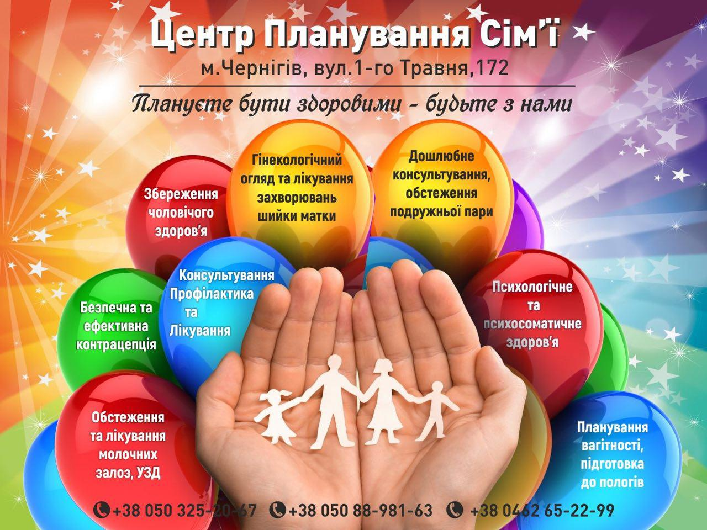

20.10.18
Мамологи Юрій Лушніков та Ольга Єременко про профілактику раку молочної залози. Ранок (20.10.18)
29.11.2019
Щасливий шлюб - це не випадковість. Він можливий лише тоді, коли люди свідомо приймають рішення про створення сім’ї, знають, чого прагнуть і як цього можуть досягти.
29.11.2019 завідувачка Центру Планування Сім’ї Єременко О.І. та психолог Олех Т.М. провели презентацію ЦПС для працівників Чернігівського міського відділу державної реєстрації актів цивільного стану висвітлені проблеми (загрозливий стан демографічної ситуації, погіршення здоров’я населення, у тому числі, репродуктивного; несвідоме ставлення до сім’ї, шлюбу, народження дітей) нікого не залишили байдужим. Відповідаючи на численні запитання представники ЦПС розповіли про методи планування сім’ї, дошлюбне медичне та психологічне консультування. У ході дружнього цікавого спілкування обговорювали можливості та сфери співпраці. А , як відомо, велика дорога починається з першого маленького кроку, і подолає ії той хто, йде.
Спеціально для працівників Чернігівського міського відділу реєстрації актів цивільного стану лікарями центру планування сім’ї був створений плакат, у якому висвітлюються послуги, що надаються спеціалістами центру.
02.12.19
02.12.19-просвітницька відеобесіда «Навчитись планувати своє майбутнє» для студентів Чернігівського вищого професійного училища побутового обслуговування №9
Проводить психолог Центру Планування сім’І Олех Тетяна Михайлівна
Уже кілька років поспіль триває співпраця ЦПС з Чернігівським вищим професійним училищем. Кожного року студенти приходять щоб послухати відеолекціі з питань планування сім’ї та збереження репродуктивного здоров’я.
Дивлячись фільм «Плануємо майбутнє», слухаючи коментарії спеціалістів, отримуючи професійні відповіді на свої запитання молодь дізнається про становлення репродуктивної системи, руйнівний вплив шкідливих звичок, ризики ранніх статевих відносин, профілактику не планованої вагітності.